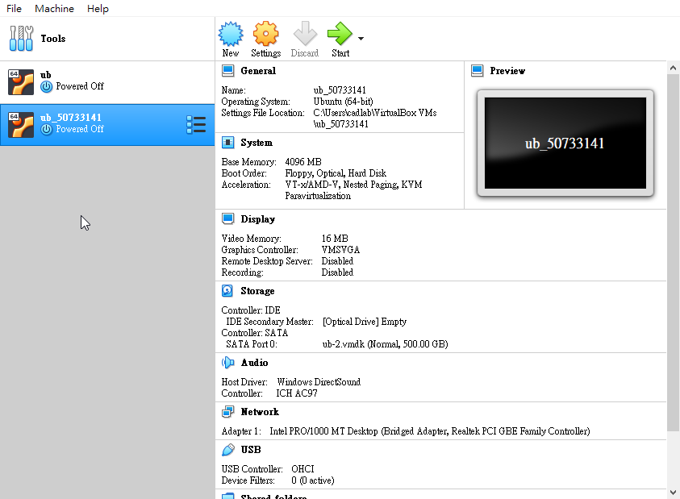
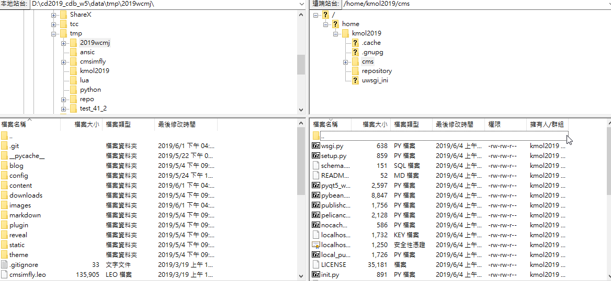

week_16 << Previous Next >> 2019_cdb_w5.w13
week_16 << Previous Next >> 2019_cdb_w5.w13
利用虛擬主機開啟動態網站
下載https://2019wcm.blogspot.com/中老師在w15內容裡新增的W15 實作所完成的虛擬主機 vmdk 壓縮檔案並下載下來
在virtualbox裡新增一個虛擬主機，並在硬碟選擇裡選擇"使用現有虛擬硬碟檔案"-選擇安裝下來的w15虛擬檔案，建立完成後開啟(ub_50733141)。
開啟並登入後，利用ifconfig查詢ip-開啟filezilla連線到虛擬主機後，將虛擬主機內的"cms"檔案修改成自己倉儲內的檔案。

完成後開啟瀏覽器，網址輸入:
個人靜態網頁-http://虛擬主機網址。即可利用虛擬主機開啟個人靜態網站
個人動態網頁-https://虛擬主機網址。即可利用虛擬主機開啟個人動態網站
week_16 << Previous Next >> 2019_cdb_w5.w13